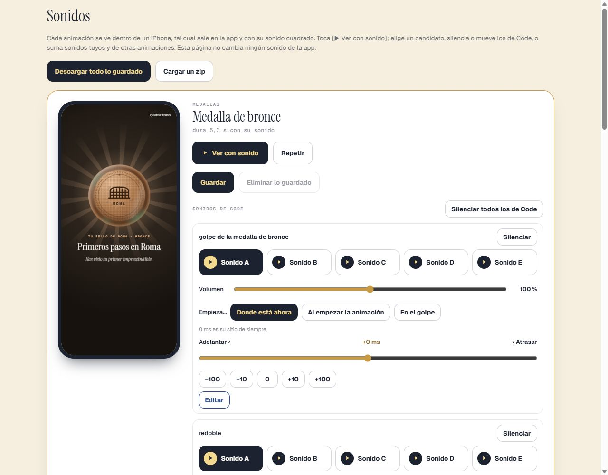
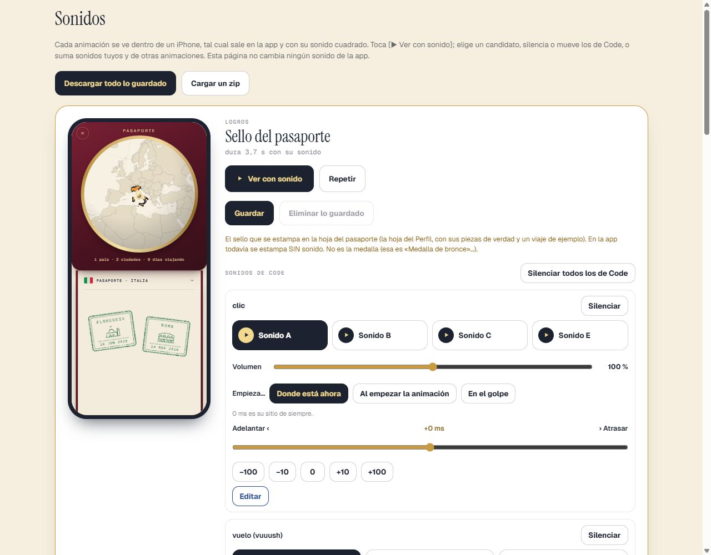

| Tarjeta | Qué enseñaba | Qué enseña ahora | Duración | Sonidos (partitura) | Candidatos | |
|---|---|---|---|---|---|---|
Medalla de broncemedalla_bronce | Lo mismo que ahora | la pantalla de la medalla (el «sello» de ciudad de los logros) (bronce), con la pieza de la app (plan de pantallas de la app: ["sello"]) | 5,3 s | medalla_bronce redoble@3.70 · medalla_bronce@4.40 | medalla_bronce: A B C D E · redoble: A B C D E | bien |
Medalla de platamedalla_plata | Lo mismo que ahora | la pantalla de la medalla (el «sello» de ciudad de los logros) (plata), con la pieza de la app (plan de pantallas de la app: ["sello"]) | 5,3 s | medalla_plata redoble@3.70 · medalla_plata@4.40 | medalla_plata: A B C D E · redoble: A B C D E | bien |
Medalla de oromedalla_oro | Lo mismo que ahora | la pantalla de la medalla (el «sello» de ciudad de los logros) (oro), con la pieza de la app (plan de pantallas de la app: ["sello"]) | 5,3 s | medalla_oro redoble@3.70 · medalla_oro@4.40 | medalla_oro: A B C D · redoble: A B C D E | bien |
Medalla de diamantemedalla_diamante | Lo mismo que ahora | la pantalla de la medalla (el «sello» de ciudad de los logros) (diamante), con la pieza de la app (plan de pantallas de la app: ["sello"]) | 5,3 s | medalla_diamante redoble@3.70 · medalla_diamante@4.40 | medalla_diamante: A B C D · redoble: A B C D E | bien |
Colección completacoleccion | Lo mismo que ahora | la pantalla de colección completa, con la pieza de la app (plan de pantallas de la app: ["coleccion"]) | 4,8 s | coleccion redoble@3.00 · coleccion@3.00 | coleccion: A B C D · redoble: A B C D E | bien |
Emblema secretoemblema | Lo mismo que ahora | la escena del sitio (emblema secreto), con la pieza de la app (plan de pantallas de la app: ["emblema"]) | 4,2 s | emblema toque@0.75 · toque@1.47 · toque@2.05 · toque@2.50 · toque@2.82 · emblema@3.60 | emblema: B C D E · redoble: A B C D E · clic: A B C E · brillo: A B C D E | bien |
Emblema maravilla (el Coliseo)emblema_maravilla | Lo mismo que ahora | la escena del sitio (emblema secreto), con la pieza de la app (plan de pantallas de la app: ["emblema"]) | 4,2 s | emblema toque@0.75 · toque@1.47 · toque@2.05 · toque@2.50 · toque@2.82 · emblema@3.60 | emblema: B C D E · redoble: A B C D E · clic: A B C E · brillo: A B C D E | bien |
Final de las 7 maravillasmaravilla | Lo mismo que ahora | el final de las 7 maravillas, con la pieza de la app (plan de pantallas de la app: ["final7"]) | 6,8 s | maravilla toque@2.10 · toque@2.60 · toque@3.00 · toque@3.30 · toque@3.55 · toque@3.72 · redoble@6.05 · maravilla@6.05 | maravilla: A B C D · redoble: A B C D E | bien |
País nuevopais | Lo mismo que ahora | el sellado del pasaporte de país nuevo, con la pieza de la app (plan de pantallas de la app: ["pais"]) | 2,8 s | pais vuelo@1.70 · pais@1.90 | pais: A B C D E · vuelo: B C D | bien |
Sello del pasaportesello | La medalla de bronce de Roma («Tu sello de Roma · Bronce · Primeros pasos en Roma»): la pantalla de logros, no el pasaporte. | El sello que se estampa en la hoja del pasaporte: la hoja de Italia de la app (`PasaporteScreen`) con un pasaporte de ejemplo; el sello de Roma cae y se estampa. | 3,7 s | sello_pasaporte vuelo@1.55 · clic@2.05 · brillo@2.10 | clic: A B C E · vuelo: B C D · brillo: A B C D E | MAL → corregida |
Pedazo que entra en su círculopedazo | Lo mismo que ahora | el pedazo entrando en su círculo, con la pieza de la app (plan de pantallas de la app: ["pedazos"]) | 2,9 s | pedazo vuelo@2.04 · clic@2.10 · brillo@2.30 · tic@2.90 | clic: A B C E · vuelo: B C D · brillo: A B C D E | bien |
Patrimonio de la UNESCOpatrimonio | Lo mismo que ahora | la pantalla de patrimonio, con la pieza de la app (plan de pantallas de la app: ["patrimonio"]) | 1,9 s | patrimonio tic@0.00 · tic@0.08 · tic@0.16 · tic@0.24 · tic@0.32 · tic@0.40 · tic@0.48 · tic@0.56 · tic@0.64 · tic@0.72 · tic@0.80 · tic@0.88 · tic@0.96 · tic@1.04 · tic@1.12 · brillo@1.30 | brillo: A B C D E | bien |
Logro de viajeroviajero | Lo mismo que ahora | la pantalla de logro de viajero, con la pieza de la app (plan de pantallas de la app: ["viajero"]) | 1,9 s | viajero tic@0.00 · tic@0.08 · tic@0.16 · tic@0.24 · tic@0.32 · tic@0.40 · tic@0.48 · tic@0.56 · tic@0.64 · tic@0.72 · tic@0.80 · tic@0.88 · tic@0.96 · tic@1.04 · tic@1.12 · brillo@1.30 | brillo: A B C D E | bien |
Escena de Roma (Fontana de Trevi)escena_roma | Lo mismo que ahora | la escena del sitio (emblema secreto), con la pieza de la app (plan de pantallas de la app: ["emblema"]) | 4,2 s | emblema toque@0.75 · toque@1.47 · toque@2.05 · toque@2.50 · toque@2.82 · emblema@3.60 | emblema: B C D E · redoble: A B C D E · clic: A B C E · brillo: A B C D E | bien |
Escena de Lanzarote (Timanfaya)escena_lanzarote | Lo mismo que ahora | la escena del sitio (emblema secreto), con la pieza de la app (plan de pantallas de la app: ["emblema"]) | 4,2 s | emblema toque@0.75 · toque@1.47 · toque@2.05 · toque@2.50 · toque@2.82 · emblema@3.60 | emblema: B C D E · redoble: A B C D E · clic: A B C E · brillo: A B C D E | bien |
Los fuegosfuegos | Lo mismo que ahora | La pieza de los fuegos (`Fuegos`) sola, sobre fondo oscuro: es el trozo de la escena del Coliseo donde estallan, no una escena propia. | 3,2 s | fuegos emblema@0.20 · brillo@1.00 · brillo@1.80 | emblema: B C D E · brillo: A B C D E | bien |
Resumen del díaresumen_dia | Lo mismo que ahora | La pantalla `ResumenDia` de la app con tres logros de ejemplo. | 1,9 s | dia_completo tic@0.00 · tic@0.08 · tic@0.16 · tic@0.24 · tic@0.32 · tic@0.40 · tic@0.48 · tic@0.56 · tic@0.64 · tic@0.72 · tic@0.80 · tic@0.88 · tic@0.96 · tic@1.04 · tic@1.12 · brillo@1.30 | brillo: A B C D E | bien |
Resumen del viajeresumen_viaje | Lo mismo que ahora | La pantalla `ResumenViaje` de la app con un viaje de ejemplo (Roma). | 1,9 s | dia_completo tic@0.00 · tic@0.08 · tic@0.16 · tic@0.24 · tic@0.32 · tic@0.40 · tic@0.48 · tic@0.56 · tic@0.64 · tic@0.72 · tic@0.80 · tic@0.88 · tic@0.96 · tic@1.04 · tic@1.12 · brillo@1.30 | brillo: A B C D E | bien |
Tu primer díaprimer_dia | Lo mismo que ahora | La pantalla `PrimerDia` de la app. | 2,0 s | primer_dia brillo@0.30 · clic@0.50 · clic@0.65 · clic@0.80 · brillo@1.40 | brillo: A B C D E · clic: A B C E | bien |
Apertura de JUTRIPapertura | Lo mismo que ahora | La apertura de JUTRIP (la misma pieza que la app). | 3,5 s | apertura vuelo@1.70 · apertura@2.10 | apertura: A B C D E · vuelo: B C D | bien |
Visto (el toque y el brillo)visto | Lo mismo que ahora | Una pantalla de muestra con el botón [Visto] (el gesto): el [Visto] real vive dentro de la ficha de un sitio de DÍAS, que necesita un viaje entero. | 0,5 s | visto toque@0.00 · brillo@0.06 | — | bien |
Campanita del avisoaviso | Lo mismo que ahora | Una pantalla de muestra con el botón «Llega un aviso» (el gesto): la campana real vive en la cabecera de la app. | 1,3 s | aviso campanita@0.00 | — | bien |
Tic de los números que subentic | Lo mismo que ahora | Solo el sonido (no tiene animación propia: suena dentro del resumen del día). | 1,9 s | dia_completo tic@0.00 · tic@0.08 · tic@0.16 · tic@0.24 · tic@0.32 · tic@0.40 · tic@0.48 · tic@0.56 · tic@0.64 · tic@0.72 · tic@0.80 · tic@0.88 · tic@0.96 · tic@1.04 · tic@1.12 · brillo@1.30 | — | bien |
Toque (el latido de los aros)toque | Lo mismo que ahora | Solo el sonido (no tiene animación propia: suena en [Visto] y en los latidos del emblema). | 4,2 s | emblema toque@0.75 · toque@1.47 · toque@2.05 · toque@2.50 · toque@2.82 · emblema@3.60 | — | bien |
Lo ganado que vuelavuelo | Lo mismo que ahora | Solo el sonido (el vuelo de lo ganado se ve al pasar de pantalla en cualquier logro). | 1,0 s | vuelo vuelo@0.63 | vuelo: B C D | bien |

